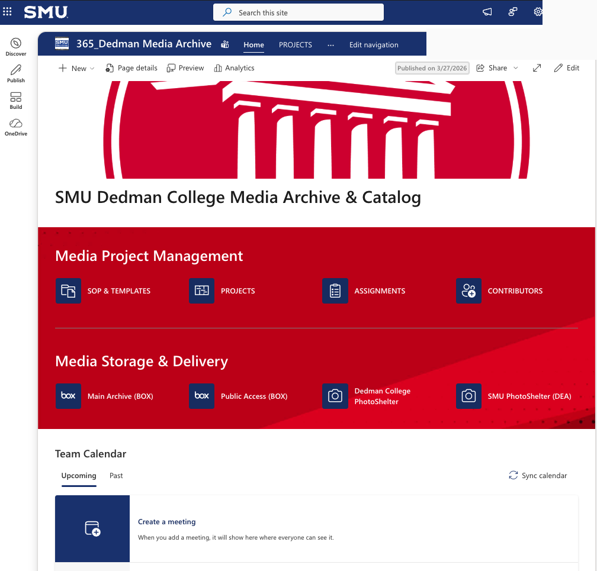
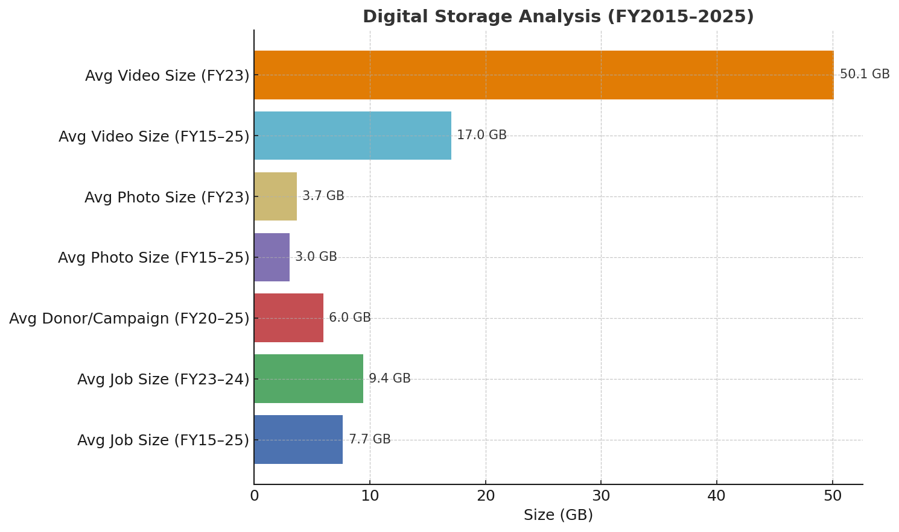

Dedman College Media Archive & Catalog
Built a governed, end-to-end multimedia workflow for intake, metadata, quality control, archiving, public delivery, and team enablement.
Project portfolio
Each project begins with the problem and outcome. The case studies add technical choices, evidence, limitations, and next steps for readers who want the full story.

Built a governed, end-to-end multimedia workflow for intake, metadata, quality control, archiving, public delivery, and team enablement.
An operational desktop workflow connecting reviewed SharePoint intake, structured metadata automation, Adobe Bridge QC, and archive preparation.

Made institutional storage measurable across 302,933 folders and more than 120 TB of media data.

Converted 68 incomplete partner records into a mapping-ready spatial dataset.

A post-class revision of a maternal-health research project, focused on descriptive surveillance, demographic disparities, and methodological transparency.

Analyzed 94,848 public records to explain claim types, sites, amounts, and reimbursement outcomes.
Additional projects
Earlier prototype
The proof of concept that explored controlled taxonomy and AI-assisted suggestions before the Metadata Wizard evolved into a desktop workflow.
View evolutionRenames media files consistently and produces an Excel shot list with original names, new names, and durations.
View GitHubSelected computational work supporting technical preparation in applied mathematics.
View education